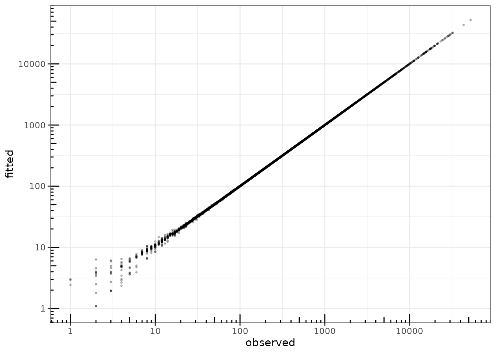
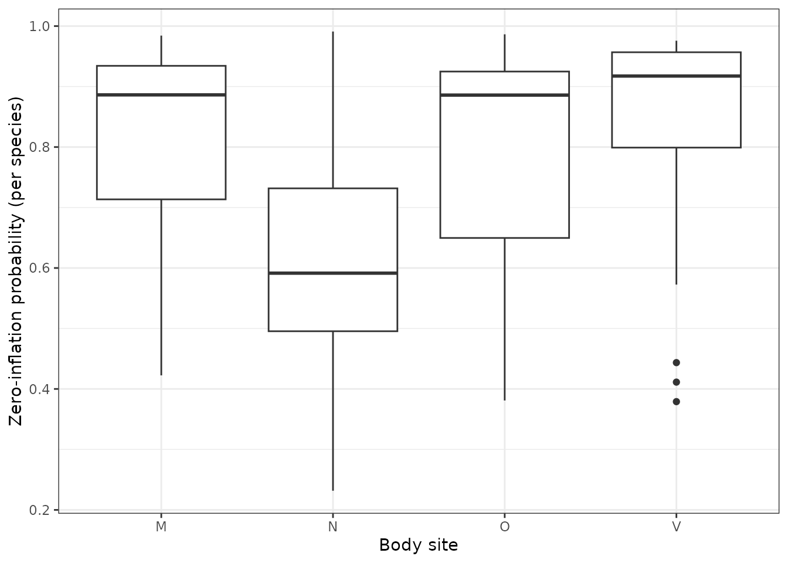
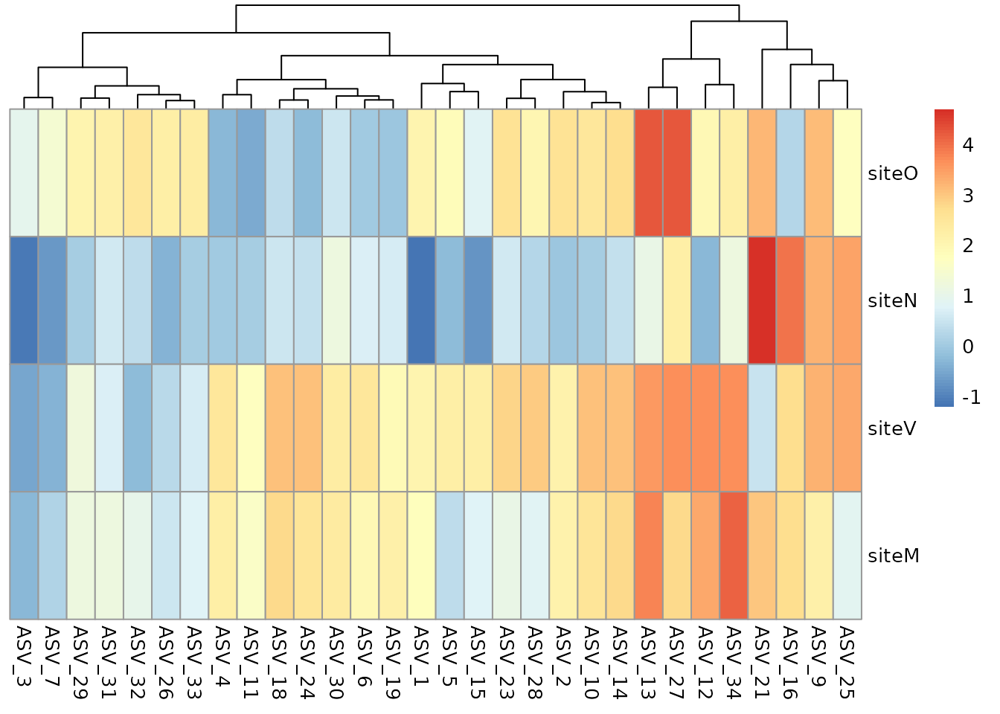
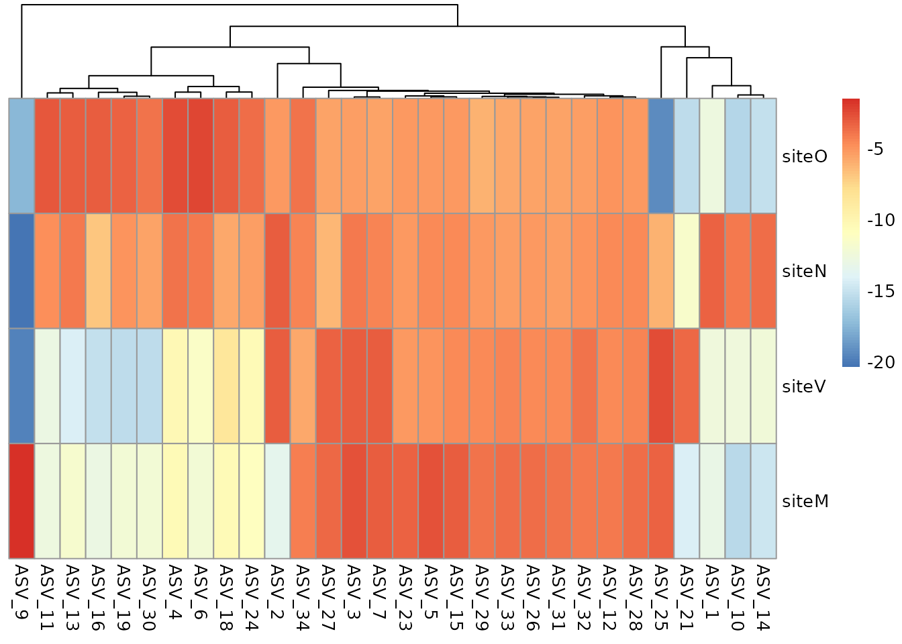
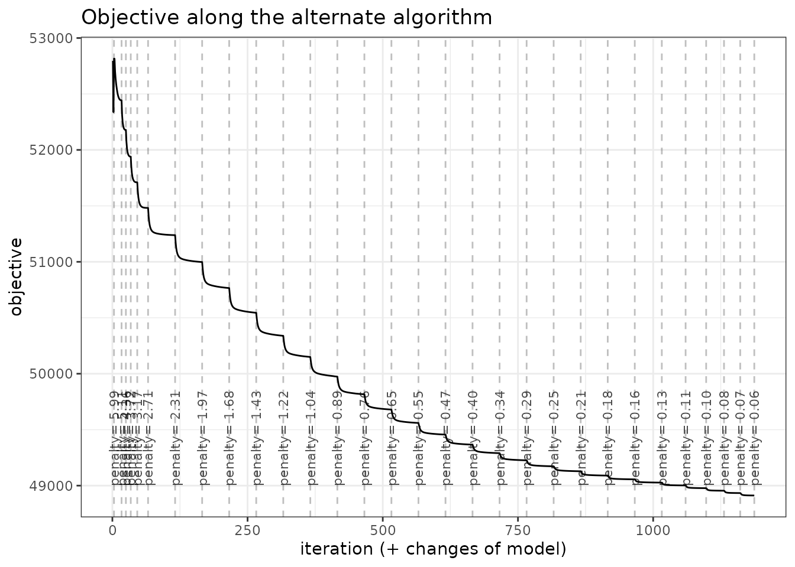
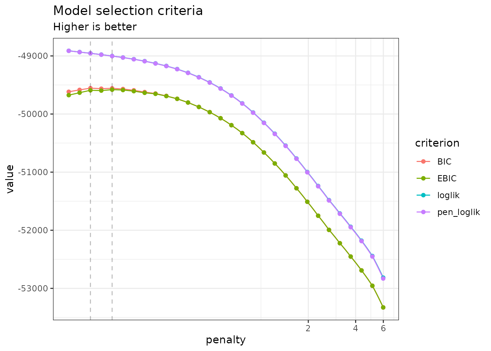
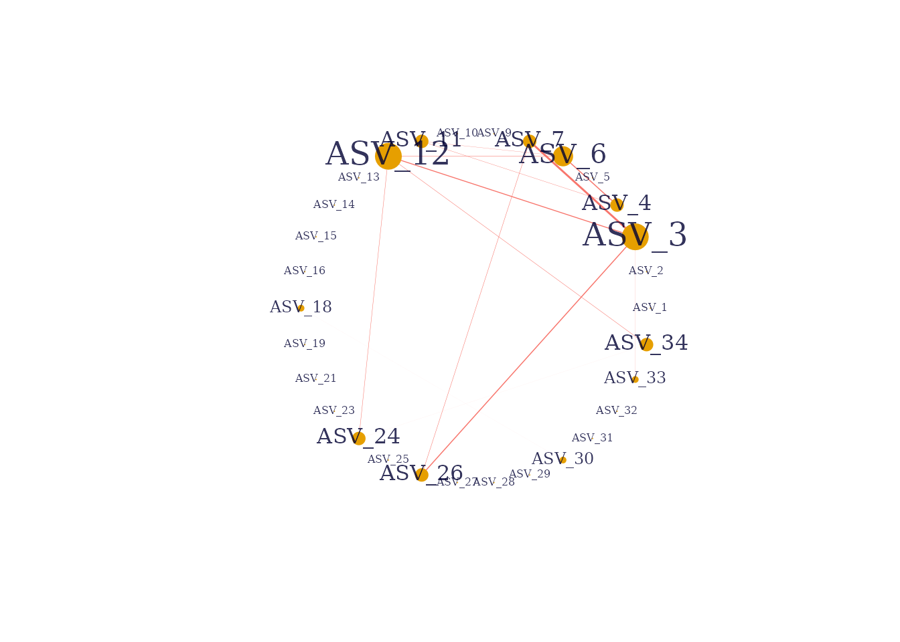

vignettes/ZIPLN.Rmd
ZIPLN.RmdThis vignette illustrates the ZIPLN and
ZIPLNnetwork functions and the methods accompanying the R6
classes ZIPLNfit and ZIPLNnetworkfamily. These
models extend PLN and PLNnetwork (see the
corresponding vignettes) to count data with an excess of zeros that a
(sparse) Poisson lognormal model alone cannot capture.
The packages required for the analysis are PLNmodels plus some others for data manipulation and representation:
We illustrate zero-inflation with the microcosm data set
(Mariadassou et al. 2023): the evolution
of the microbiota of lactating cows, sampled in 4 body sites (oral,
nasal, vaginal, milk) at several time points, with p =
259 taxa, n = 880 samples and an average of
90% zeroes. To keep this vignette fast to compile while remaining
representative, we restrict the analysis to the 30 most abundant
taxa, which still display substantial zero-inflation:
data(microcosm)
most_abundant <- order(colSums(microcosm$Abundance), decreasing = TRUE)[1:30]
microcosm$Abundance <- microcosm$Abundance[, most_abundant]
mean(microcosm$Abundance == 0)## [1] 0.8018182The zero-inflated PLN model (ZIPLN) combines the Poisson lognormal model (Aitchison and Ho 1989) – see the PLN vignette – with a zero-inflation mechanism: each count is either a structural zero (with probability ) or drawn from the usual PLN generative process:
Just like PLN,
generalizes to
to account for offsets and covariates. The zero-inflation probabilities
can be parameterized in several ways, controlled by the zi
argument of ZIPLN():
"single": a single
shared by all entries (default)."row": one
per sample."col": one
per species.Y ~ PLN effect | ZI effect (see below).ZIPLNnetwork further adds a sparsity penalty on
,
exactly as PLNnetwork does for PLN (see the PLNnetwork vignette and Chiquet et al. (2019)), so that both the excess of
zeros and the residual dependency structure between taxa are accounted
for.
We fit a plain PLN model and the four ZIPLN
parameterizations, all with the sampling site as a covariate for the
count part, to check how much accounting for zero-inflation improves the
fit:
myPLN <- PLN(Abundance ~ 0 + site + offset(log(Offset)), data = microcosm)
zi_single <- ZIPLN(Abundance ~ 0 + site + offset(log(Offset)), data = microcosm)
zi_row <- ZIPLN(Abundance ~ 0 + site + offset(log(Offset)), data = microcosm, zi = "row")
zi_col <- ZIPLN(Abundance ~ 0 + site + offset(log(Offset)), data = microcosm, zi = "col")
zi_site <- ZIPLN(Abundance ~ 0 + site + offset(log(Offset)) | 0 + site, data = microcosm)
data.frame(
model = c("PLN", "ZIPLN (single)", "ZIPLN (row)", "ZIPLN (col)", "ZIPLN (site-dependent)"),
loglik = c(myPLN$loglik, zi_single$loglik, zi_row$loglik, zi_col$loglik, zi_site$loglik),
BIC = c(myPLN$BIC, zi_single$BIC, zi_row$BIC, zi_col$BIC, zi_site$BIC),
ICL = c(myPLN$ICL, zi_single$ICL, zi_row$ICL, zi_col$ICL, zi_site$ICL)
) %>% knitr::kable(digits = 1)| model | loglik | BIC | ICL |
|---|---|---|---|
| PLN | -51716.2 | -53699.3 | -100954.0 |
| ZIPLN (single) | -48847.5 | -50834.0 | -89988.5 |
| ZIPLN (row) | -46875.9 | -51842.2 | -89899.3 |
| ZIPLN (col) | -48147.4 | -50232.3 | -87715.3 |
| ZIPLN (site-dependent) | -47647.5 | -50037.4 | -85962.4 |
Accounting for zero-inflation brings a large improvement over plain
PLN, and letting the zero-inflation probability depend on
the body site (zi_site) gives the best BIC and ICL among
the parameterizations considered – not surprising given how different
the four body sites are.
As for PLN, fitted values stay close to the observed
counts:
data.frame(
fitted = as.vector(fitted(zi_site)),
observed = as.vector(microcosm$Abundance)
) %>%
ggplot(aes(x = observed, y = fitted)) +
geom_point(size = .5, alpha = .25) +
scale_x_log10(limits = c(1, NA)) +
scale_y_log10(limits = c(1, NA)) +
theme_bw() + ggplot2::annotation_logticks()
fitted value vs. observation
The site-dependent model also lets us recover, for each species, an
estimated zero-inflation probability per body site
(model_par$Pi), revealing substantial heterogeneity:
one_obs_per_site <- !duplicated(microcosm$site)
pi_hat <- zi_site$model_par$Pi[one_obs_per_site, ]
rownames(pi_hat) <- as.character(microcosm$site[one_obs_per_site])
data.frame(site = rep(rownames(pi_hat), ncol(pi_hat)), zi_prob = as.vector(pi_hat)) %>%
ggplot(aes(x = site, y = zi_prob)) +
geom_boxplot() + theme_bw() +
labs(x = "Body site", y = "Zero-inflation probability (per species)")
Estimated zero-inflation probability by body site, across the 30 species
Coefficient matrices for the count and zero-inflation parts can be
inspected with coefficients() – here both components share
the same site design, so rows of
(count) and
(zero-inflation) line up one-to-one with body sites:
pheatmap::pheatmap(coefficients(zi_site, "zero"), cluster_rows = FALSE)
Estimated regression coefficients of the zero-inflation component ()
pheatmap::pheatmap(coefficients(zi_site, "count"), cluster_rows = FALSE)
Estimated regression coefficients of the count component ()
ZIPLNnetwork adjusts the model for a series of penalties
controlling the number of edges in the network, just like
PLNnetwork, but on top of a zero-inflation component. We
keep the default zi = "single" here for simplicity and
focus on the network. The default backend = "builtin" is
used (it now finds a consistently better ELBO than "nlopt"
here, at the cost of being slower); we lower min_ratio to
explore a wider, sparser range of the penalty path:
zi_models <- ZIPLNnetwork(Abundance ~ site + offset(log(Offset)), data = microcosm, control = ZIPLNnetwork_param(min_ratio = 0.01))As for PLNnetwork, a diagnostic plot and the evolution
of the criteria along the path are available:
plot(zi_models, "diagnostic")
diagnostic of the ZIPLNnetwork fits
plot(zi_models)
evolution of model selection criteria
We select a network with getBestModel() and represent
it:
zi_net <- getBestModel(zi_models, "EBIC")
plot(zi_net)
sparse residual network between the 30 most abundant taxa
As for PLNnetwork, a more robust (but more
computationally intensive) stability_selection()-based
choice of penalty is available – we do not run it here to keep this
vignette fast, see the PLNnetwork vignette
for an example.